News IO
To understand how the focus of financial news shifted since 2019, it is necessary to know which topics are covered the most each day, so the trend can be analyzed. There are many ways to vectorize text. This project chooses to use tf-idf score. Below are the TF-IDF vectors after the “Data Cleaning” step, which includes removing stop words and punctuations, replacing special characters, and lemmatizing, etc.
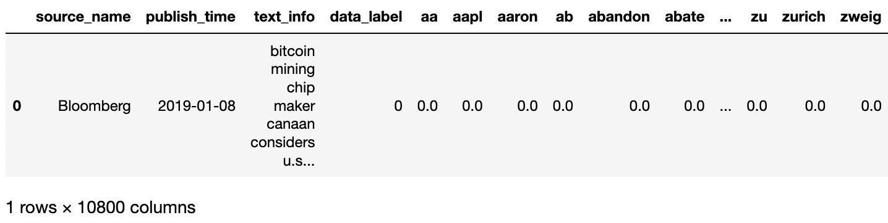Dimensionality Reduction
The original data vectors have over 10K dimentions and 6K instances. In order to avoid the expensive computation from sparsity, this project cuts down the vector dimension to 300 using TruncatedSVD method.
DBScan
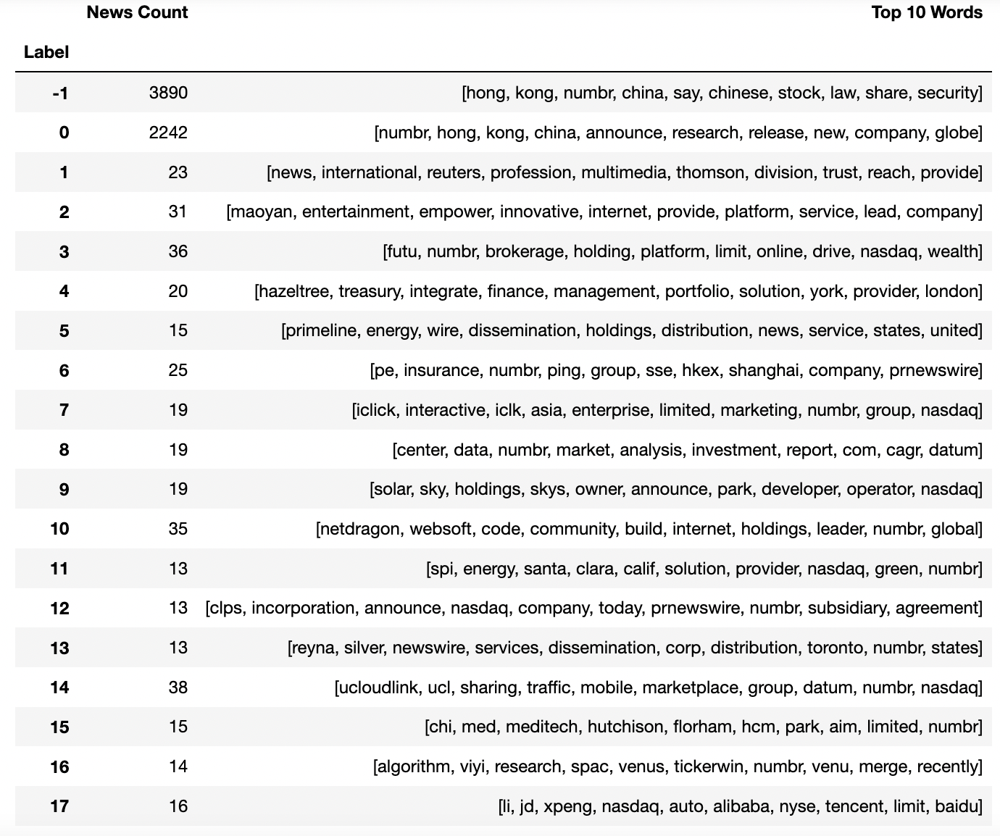A naive DBScan method is not very ideal. The top two clusters with the most weight have ambiguous and mixed information.
Hierarchical Clustering
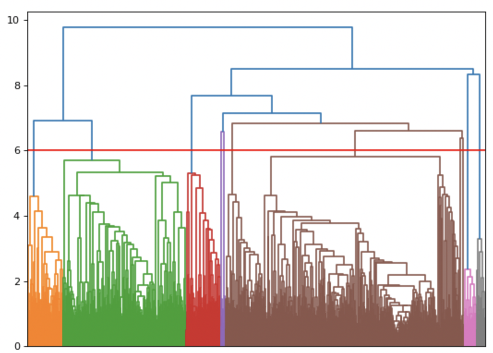 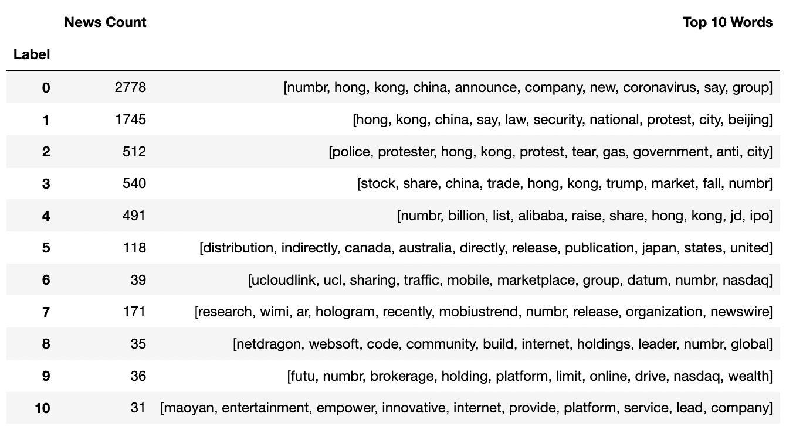The dendrogram shows that the data can be clustered into 11 groups with a split at 6. The result has a clearer message on clusters with "protest" and "law" topics than DBScan. Hierarchical clustering provides an overview of the topics. Cluster #0 seems to be the "other" category, which contains a mix of uncategorized news, and it needs to be broken down further. #0 cluster contains some important keywords like "china", "company", and "coronavirus".
Silhouette Analysis
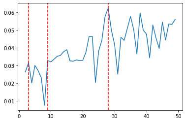From the Silhouette analysis, 4, 9, 28 number of clusters generate the highest silhouete scores. Below section will compare the results from K-means clustering with these three parameters.
K-Means Clustering Results
While K-means is an efficient clustering method, choosing an optimal K is important to control performance and granularity of the result. Since the goal is to identify major news events, plotting the most important clusters against a timeline and validating them with actual events is a way to measure cluster's capability of capturing information, and thus help determine the best value of K. To help understand the semantic meaning of each cluster, each cluster result also comes with a "Top 10 Words" table based on their tfidf scores.
4 Clusters
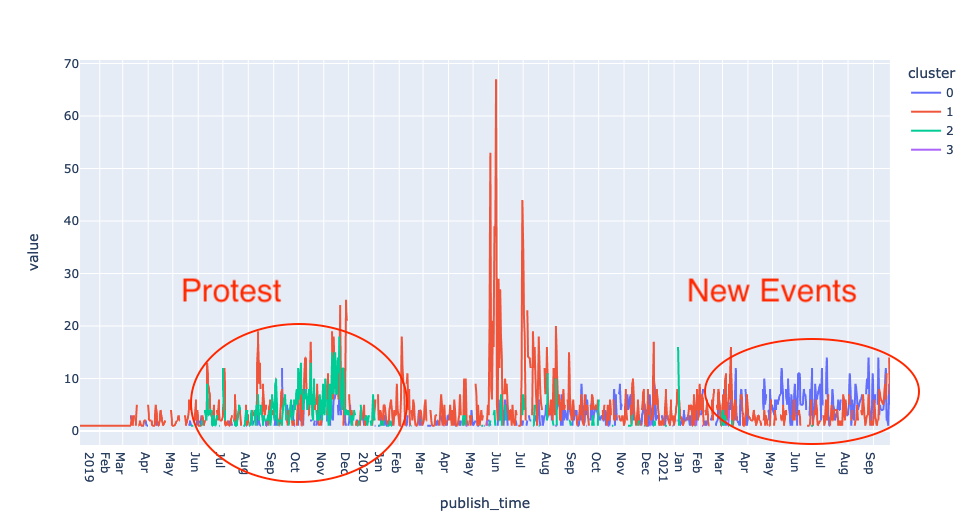 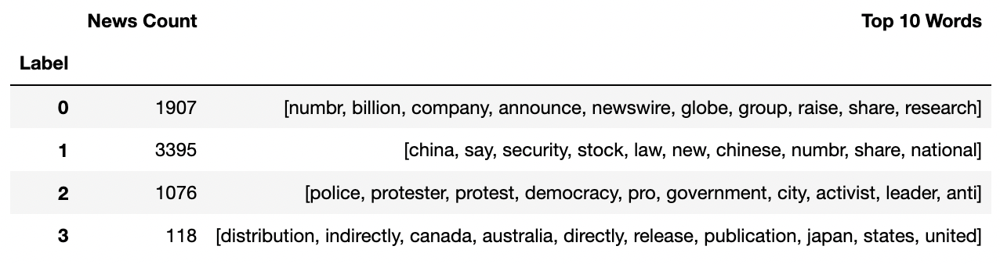Two distinctive events can be observed from the chart. They are the beginning of the protest and a series of new financial activities. The other two clusters should not be considered as events, since they are composed of mixed topics and span across the whole timeline. The four cluster baseline solution gives enough information to state that Hong Kong news media has shifted their focus away from the protest and turned into new financial activities. However, to understand the timeline and the topics of other high volume peaks, a higher granularity clustering solution is needed.
9 Clusters
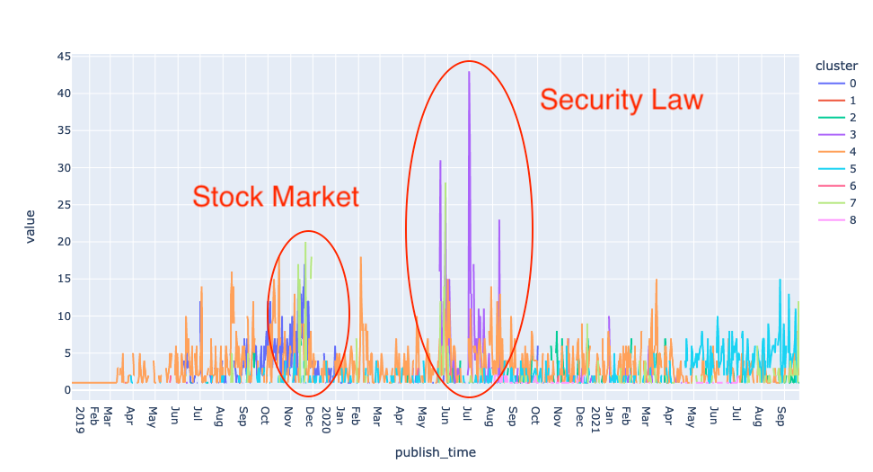 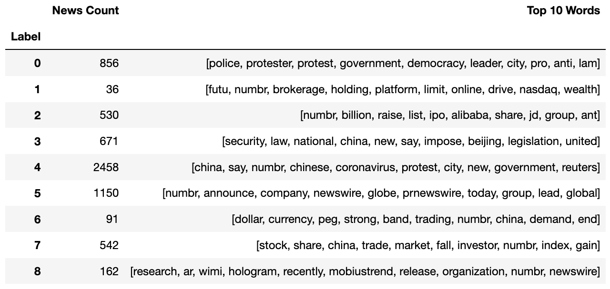9 clusters capture two more major events, which are "stock market tumbling" and "introduction of the National Security Law". This clustering draws a clearer holistic view since it identifies the two highest volume peaks in the chart. However, the #4 cluster still contains ambiguous information, and it includes keywords like "coronavirus", "protest" that represents totally different events. This clustering solution also shows that by adding more clusters, more events can be identified from the "Other" cluster, #4 in this case. It's a very convenient property. It means that if increasing the number of clusters, the #0 cluster can be broken down further.
28 Clusters
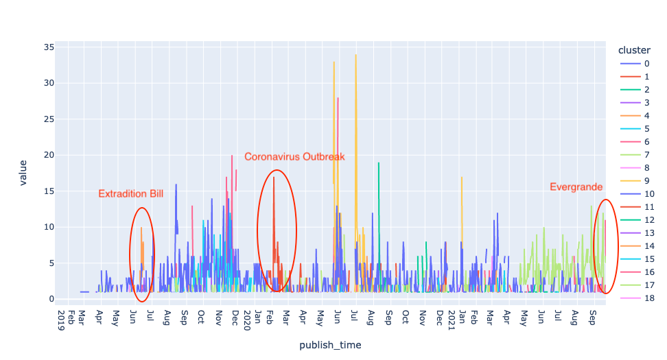As expected, coronavirus is separated from the "Other" cluster. More interesting events also start to show up in the chart. Twenty-eight cluster solution shows a much better event timeline than four and nine cluster solutions. Twenty-eight is also the optimal number from silhouette analysis. Even though big clusters like #17 and #20 haven't been broken down into smaller sizes, the general topics about "protests" and "new financial activities" are well captured. And because of the nature of news in general, there will always be a group of uncategorizable articles. An interactive chart is embedded below.
Summary
The optimal number of clusters 28 is obtained from Silhouette analysis. Out of need of understanding news media focus during the two years, the K-means method clusters the major topics from news in chronological order, and shows promising results. Naive DBScan and hierarchical method may perform better if more parameter tuning is applied.
Data can be found in the Data Cleaning section.
NewsIO clustering code is stored here.
HSI Stock Return
The Hang Seng Index(HSI) is composed of the largest companies of the Hong Kong stock market and is the main indicator of the overall financial market performance. To study the protest effect on the financial market, HSI and its component stocks are good targets. Features like mean return and variance during the protest can be used in clustering to understand how different stocks react to the event.
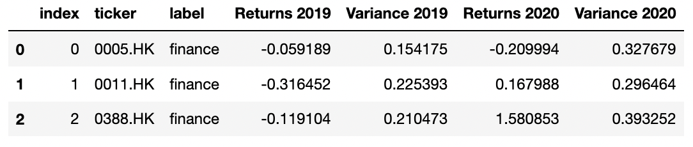Hierarchical Clustering
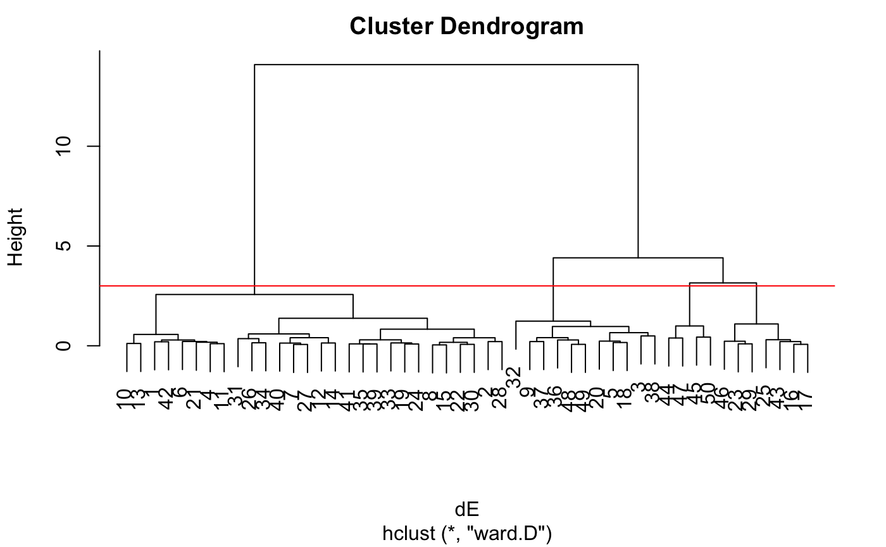Hierarchical clustering with Euclidean distance gives four clusters with a split at 3. However, the following four cluster solution does not give a decent result, maybe due to that stock returns do not have a strong hierarchical relationship.
Silhouette Analysis
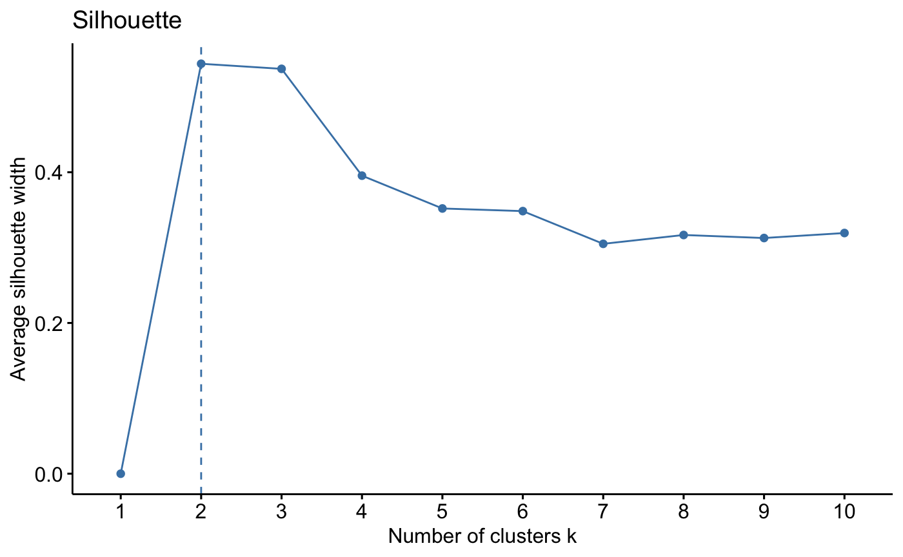The silhouette method shows that the optimal number of clusters is two. The following K-means method will experiment with K values of 2, 3, and 4.
K-Means Clustering Results
Two Clusters
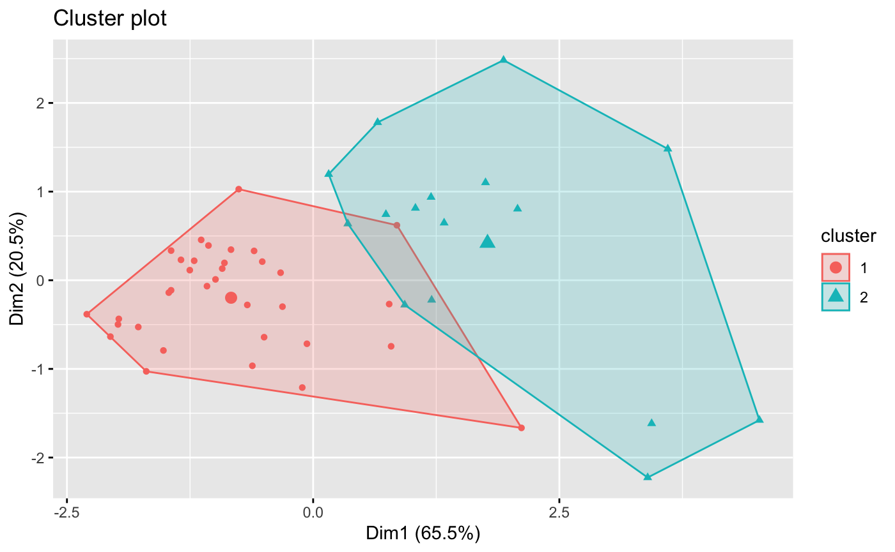Three Clusters
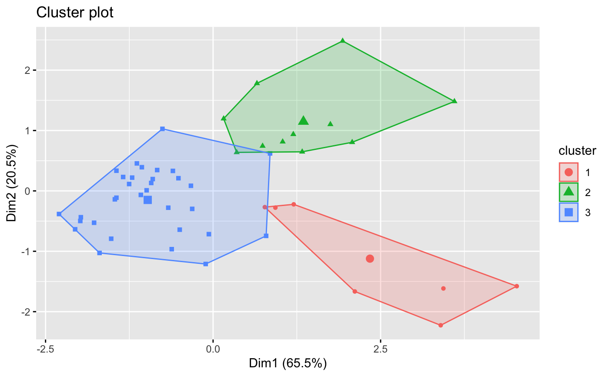Four Clusters
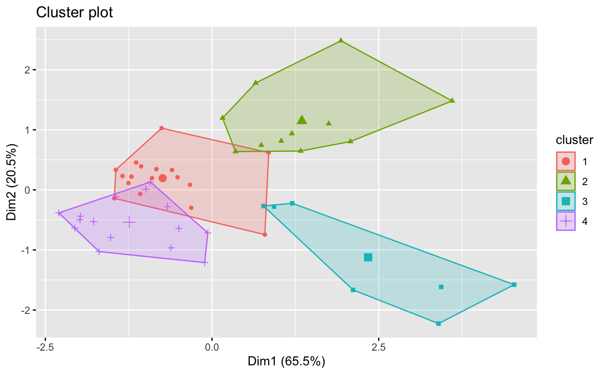Three seems to be the optimal number of clusters. The two and four cluster solutions are descent, but have overlapping areas, meaning that they do not differentiate the stocks well. This cluster result does not match with the original sub-industry label. The following will discuss the interpretation from the three cluster.
Intrepretation from the 3-Cluster Solution
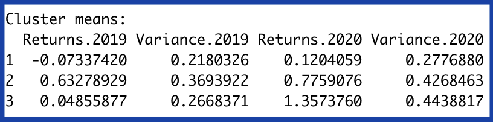The result of the clustering shows three groups of stocks, with size 32, 7, 11 respectively. As shown from the table on the left, cluster #2 has stonger return in 2019 H1 than the other two clusters, while cluster #3 has stronger return in 2020 Summer. It clusters the data nicely by their performance in different periods. Because of the social unrests, it is normal to see stocks tumbling during 2019 H2 and 2020 Summer. Thus, this appears interesting that cluster #2 and #3 performed well.
Distance Matrices
Euclidean
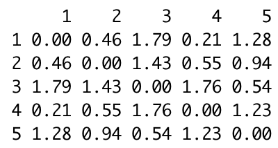Manhattan
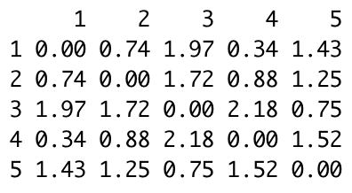Cosine Similarity
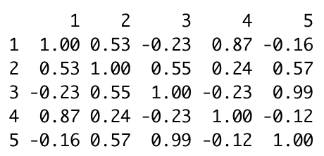Avoid showing the 50 * 50 size distance matrices, each matrix is taken a fractional snippet of size 5 * 5.
Clustering Prediction
They are three new stock data, and will be clustered using above three cluster solution.
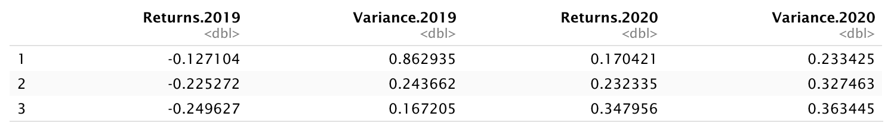 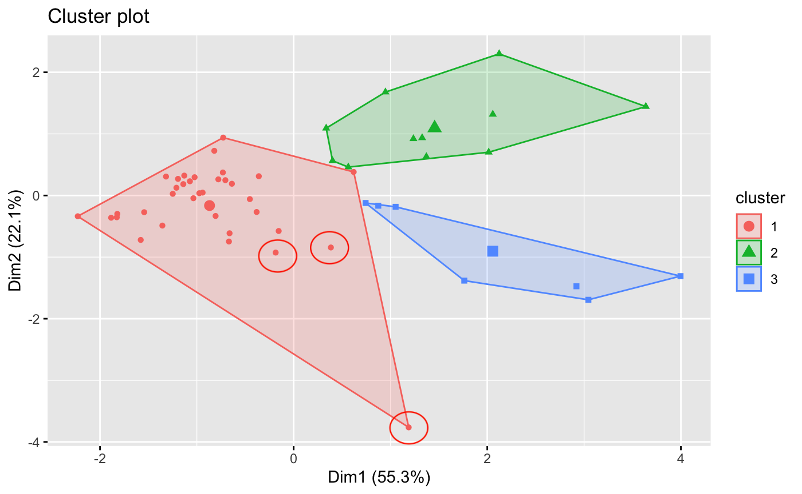The three new data vectors are categorized into the red cluster, which is the most common group.
Summary
The three cluster K-Means solution provides clean-cut groups, while the hierarchical approach does not work well. Further stock analysis is needed to seek properties of the stocks from cluster 2 and 3.